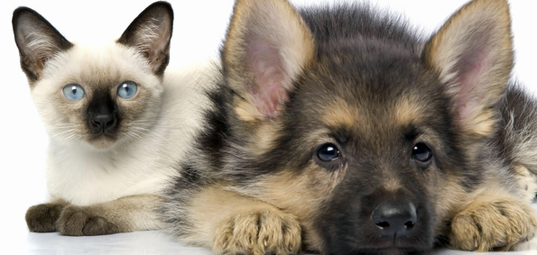
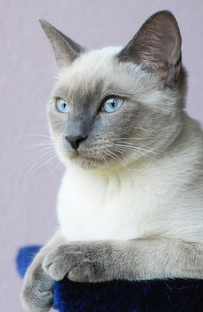

暹罗猫介绍

暹罗猫
是世界著名的短毛猫，也是
短毛猫
的代表品种。种族原产于暹罗（今泰国），故名暹罗猫。

在200多年前，这种珍贵的猫仅在泰国的皇宫和大寺院中饲养，是足不出户的贵族。
1884年英国驻泰国的曼谷领事离任时，将泰王国的礼物之一海豹色斑的暹罗猫带回英国，立即受到英国许多爱猫者的重视。
翌年，该猫就出现在伦敦郊外的水晶宫猫展会上，引起震动。
1920年引入美国，而后传布世界各地。
作为一种著名的宠物猫，暹罗猫能够较好适应主人当地的气候，且性格刚烈好动，机智灵活，好奇心特强，善解人意。
暹罗猫喜欢与人为伴，可用皮带拴着散步。
它需要主人的不断爱抚和关心，对主人忠心耿耿、感情深厚，如果强制与主人分开，则可能会抑郁而死。
暹罗猫还十分聪明，能很快学会翻筋斗叼回抛物等技巧。
暹罗猫的叫声独特或像小孩的啼哭声，而且声音很大。
体貌特征
- 头部：
呈等边三角形，整个面部从鼻子以直线分向双耳发展，呈现V字形。 所以整个面部发展十分均匀对称，而面颊底部骨骼平滑， 所以须子底部可明显见均匀颜色。
- 耳朵：
大而灵敏。耳底宽阔而且呈现重点色。耳末端较尖。
- 足掌：
细小而呈椭圆形，前肢各有五趾，后肢有四趾。
- 尾巴：
长而尖削，末端呈重点色。
- 眼睛：
中型杏眼形状，眼珠向上吊。颜色为深蓝色或湖蓝色，部分暹罗猫眼睛呈浅蓝色。从内眼角至眼梢的延长线，与耳尖构成V字形。眼微凸。
- 鼻子：
鼻管长而直， 一直伸展到额头。鼻梁高而直，从鼻端到耳尖恰为等边三角形。
- 体型：
体型中等，修长苗条。骨胳纤细，肌肉结实。颈长，体长，尾细长。
从肩至臀部呈圆筒状。腹部紧凑但不上收。臀部肌肉结实，与肩同宽。
四肢细长，协调。
- 毛色：
体毛为均匀的单色，但允许海豹色斑点。
蓝色斑点上有少量阴影色。体毛色应与斑点色对比明显。
所有特征部位（鼻端、四肢、耳朵、尾巴）斑点均为同一色，斑点中应无交驻混杂毛色和白色。